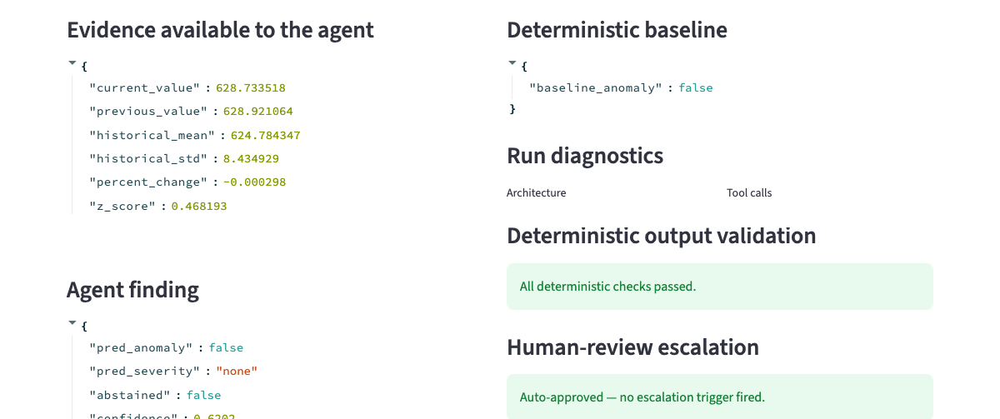

AI Evaluation
Agentic AI Evaluation Platform
Reviews monitoring anomalies, retrieves supporting evidence, and routes uncertain findings to a human.

An analyst-facing review agent that retrieves evidence, produces a structured finding, and cites exactly what supports it. A distinct reviewer agent checks the work, deterministic validation catches what the model might miss, and an explicit escalation policy decides when a person needs to look.
Python · Pydantic · Anthropic SDK · Streamlit